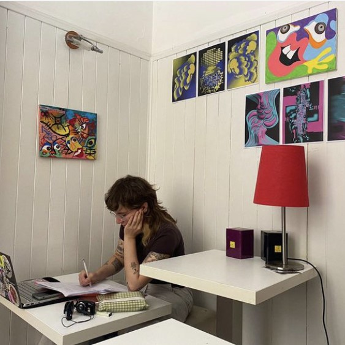

"Culture is the arts elevated to a set of beliefs."
— Thomas Wolfe
Alice Picco · Corrado Consiglio · Salvatore Di Marzo
The Concept
Italy holds more UNESCO World Heritage Sites than any other country, yet access to its cultural infrastructure — libraries, museums, archives, and reading programs — is far from uniform. A persistent north-south divide runs through almost every measure of cultural engagement: library density, loan volumes, and the percentage of people who read regularly.
Culture for All draws on open national datasets to visualize these patterns at the provincial and regional scale. By making the data spatial and interactive, the project moves beyond aggregate statistics and allows inequalities to be seen — and explored — as geographic realities. The ultimate aim is to contribute empirical evidence that can support more equitable investment in cultural infrastructure.
The project was developed for the Information Visualization course of the Digital Humanities and Digital Knowledge MA at the University of Bologna (2023/24).
Research Questions
Sourced five datasets from ISTAT (national statistical institute) and the MIC open catalog. Data covers library counts, holdings, loans, institution coordinates, and reading-habit surveys for 2021–22.
Geocoded institution records, normalized loan figures across demographic brackets, resolved region-name inconsistencies across sources, and harmonized province identifiers against GeoJSON boundaries.
Selected chart types matched to data structure: choropleth and pin maps for spatial data; pie chart for compositional breakdown; horizontal bars for ranking; multi-line chart for multi-metric comparison.
Patterns analyzed against Italy's known north-south cultural divide and urban-rural access gaps. Regional descriptions contextualize quantitative signals with qualitative local knowledge.
Data-driven observations formulated as policy-oriented findings, targeting the structural inequalities visible across all five visualizations.
| Dataset | Source | Year | Used in |
|---|---|---|---|
| Libraries per province | ISTAT · MIC open catalog | 2022 | Visualization 1 |
| Library holdings by volume category | ISTAT national library survey | 2016–2022 | Visualization 2 |
| Cultural institution locations | MIC Luoghi della Cultura open catalog | 2022 | Visualization 3 |
| Library loans by demographic & geography | ISTAT · Annual Library Survey | 2022 | Visualization 4 |
| Reading habits by region | ISTAT · Produzione e lettura di libri | 2021 | Visualization 5 |
Each province is shaded by the number of catalogued libraries. Hover over any province to see the count and explore the cultural landscape of its region. The north-south gradient is immediately visible.
How large are libraries' collections? Each slice shows the proportion of libraries in a region whose holdings fall within a given volume range. Smaller collections often indicate community-level or newer institutions; large collections point to major research or national libraries.
Italy's cultural institutions cluster in the north and in historic centres — Rome, Florence, Naples. Switch institution type with the dropdown and click any pin for details.
Northern regions — especially Lombardia and Emilia-Romagna — dominate loan volumes nationally. Use the dropdown to group results by geographic area, municipality population, or urban classification.
Six reading indicators for the population aged 6+, from casual readers (≥ 1 book/year) to avid ones (≥ 12 books/year), and print vs. digital preferences. Hover along the chart to compare all metrics simultaneously for any region.
Every indicator — library density, loan volumes, and reading rates — follows the same geographic gradient: highest in the North-West and North-East, lowest in the South and Islands. Lombardia, Emilia-Romagna, and Toscana consistently rank at the top; Calabria, Basilicata, and Molise at the bottom. This is not a coincidence of individual preferences but a structural pattern rooted in decades of unequal investment.
Cultural institutions are overwhelmingly concentrated in metropolitan areas. The loan data confirms that hub municipalities and metropolitan cities record far higher borrowing rates than peripheral or ultra-peripheral ones — even within the same region. Small municipalities, which make up the majority of Italian comuni, are systematically underserved regardless of their region.
Regions with higher library density also show higher reading engagement — particularly for avid readers (≥ 12 books/year). The relationship between access and habit is bidirectional: libraries encourage reading, and reading communities sustain libraries. The Northeast consistently leads on all six metrics; the gap between it and the South is most pronounced for intensive reading and digital book adoption.
Policy Implication
These findings point to a structural problem that individual libraries cannot solve in isolation. Equitable cultural access requires targeted investment in physical infrastructure — especially in small municipalities and southern regions — alongside digital access programs and community reading initiatives. Funding formulas that scale only with existing usage will widen existing gaps, not close them. The data suggests that where the need is greatest, provision is often weakest.
Data Gathering · Data Cleaning
Data Gathering · Data Cleaning

Data Visualization · Web Development